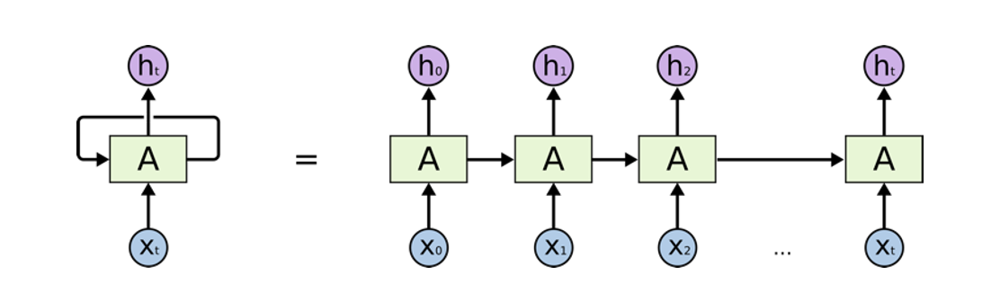
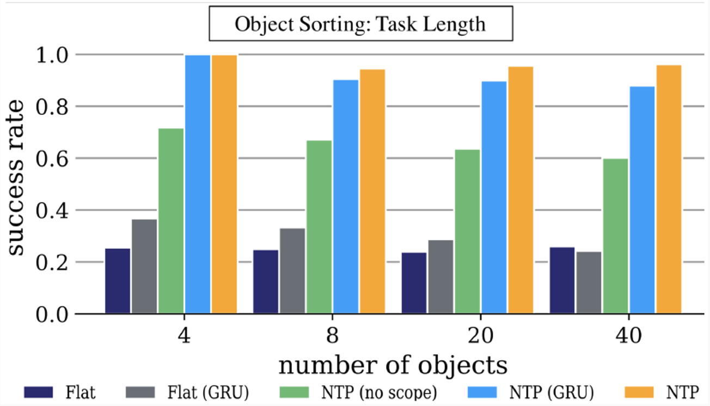
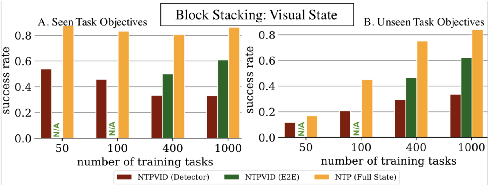
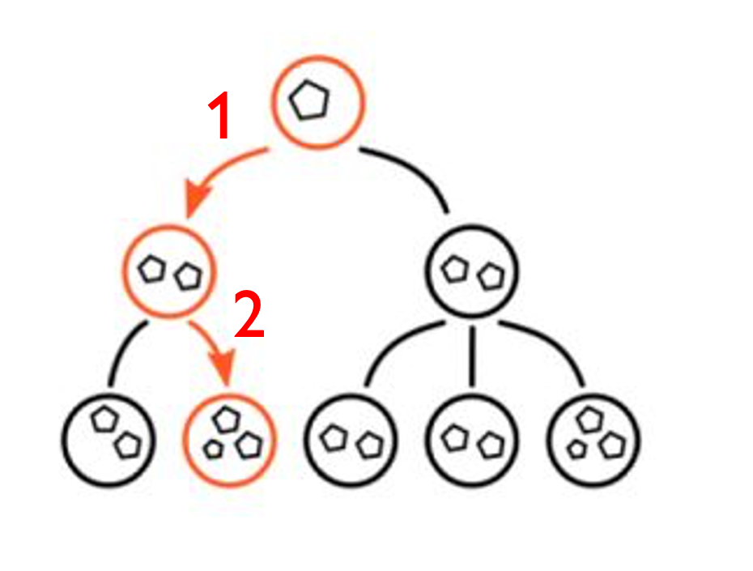

CSC2626 Imitation Learning for Robotics
Week 7: Imitation as Program Induction and Modular Decomposition of Demonstrations
Today’s agenda
• Learning programs based on execution traces (NPI - Neural Programmer Interpreters)
• Extending NPI for video-based robot imitation (NTP - Neural Task Programming)
• Inferring sub-task boundaries (TACO - Temporal Alignment for Control)
• Learning to search in Task and Motion Planning (TAMP)
• Generalization through imitation – using hierarchical policies
Neural Programmer-Interpreters
By Scott Reed & Nando de Freitas
Motivation
Neural Programmer-Interpreters (NPI) is an attempt to use neural methods to train machines to carry out simple tasks based on a small amount of training data.
Recurrent neural network (RNN)
• RNN is a neural network with feedback
• Hidden state is to capture history information and current state of the network
Long Short Term Memory (LSTM)
• LSTM is a special kind of RNN
• Gates are used to control information flow. Just like a valve
Model
• The NPI core is a LSTM network that learns to represent and execute programs given their execution traces
NPI core module
Algorithm - inference
Line 3: \(𝑀^{𝑝𝑟𝑜𝑔}\) and \(𝑀^{𝑘𝑒𝑦}\) are memory banks to store program embeddings and program keys
Algorithm - inference
Line 7: \((𝑀_{𝑗,}^{𝑘𝑒𝑦})^{𝑇}𝑘\) is directly measurement for cosine similarity
Algorithm - inference
(1): \(𝑀^{𝑝𝑟𝑜𝑔}\) and \(𝑀^{𝑘𝑒𝑦}\) are memory storing program embeddings and program keys
(2): \(𝑓_{𝑒𝑛𝑐}\) is a domain-specific encoder (for different tasks, have different encoders)
(3): \(𝑓_{𝑒𝑛𝑑}\) is to calculate the probability of finishing the program
(4): \(𝑓_{𝑝𝑟𝑜𝑔}\) is to retrieve the next program key from memory
(5): \(𝑓_{𝑎𝑟𝑔}\) is to return the next program’s arguments
(6): \((𝑀_{𝑗,}^{𝑘𝑒𝑦})^{𝑇}𝑘\) is to measure cosine similarity
(7): \(𝑓_{env}\) is a domain-specific transition mapping
Training
Directly maximize the probability of the correct execution trace output \(𝞷^{𝑜𝑢𝑡}\) conditioned on \(𝞷^{𝑖𝑛𝑝}\):
\[ 𝜃^∗ = 𝑎𝑟𝑔 \underset{𝜃}{max} \sum_{(𝞷^{𝑖𝑛𝑝}, 𝞷^{𝑜𝑢𝑡})} 𝑙𝑜𝑔𝑃(𝞷^{𝑜𝑢𝑡}|𝞷^{𝑖𝑛𝑝}, 𝜃) \]
Then we can just run gradient ascent to optimize it
Tasks
• Addition
• Teach the model the standard grade school algorithm of adding 2 base-10 numbers
• Sorting
• Teach the model bubble sorting to sort an array of numbers in ascending order
• Canonicalizing 3D models
• Teach the model to generate a trajectory of actions that delivers the camera to the target view, e.g, frontal pose at a 15° elevation
Adding numbers together
Addition demo

Bubble sort
Sorting demo

Canonicalizing 3D models
Canonicalizing demo
Experiments
• Data Efficiency
• Generalization
• Learning new programs with a fixed NPI cores
Data Efficiency - Sorting
• Seq2Seq LSTM and NPI used the same number of layers and hidden units.
• Trained on length up to 20 arrays of single-digit numbers.
• NPI benefits from mining multiple subprogram examples per sorting instance, and additional parameters of the program memory.
Generalization - Sorting
• For each length up to 20, they provided 64 example bubble sort traces, for a total of 1216 examples.
• Then, they evaluated whether the network can learn to sort arrays beyond length 20
Generalization - Adding
• NPI trained on 32 examples for sequence length up to 20
• s2s-easy trained on twice as many examples as NPI (purple curve)
• s2s-stack trained on 16 times more examples than NPI (orange curve)
Generalization - Adding
• NPI trained on 32 examples for sequence length up to 20
• s2s-easy trained on twice as many examples as NPI (purple curve)
• s2s-stack trained on 16 times more examples than NPI (orange curve)
Learning New Programs with a Fixed NPI Core
• Toy example: maximum-finding in an array
• Simple (not optimal) way: call BUBBLESORT and then take the right-most element of the array. Two new programs:
• RJMP: Move all pointers to the rightmost position in the array by repeatedly calling RSHIFT program
• MAX: Call BUBBLESORT and then RJMP
• Expand program memory by adding 2 slots. Then learn by backpropagation with the NPI core and all other parameters fixed.
Learning New Programs with a Fixed NPI Core
Only the memory slots of
the new program are updated!
All other weights are
fixed!
Protocol:
• Randomly initialize new program vectors in memory
• Freeze core and other program vectors
• Backpropagate gradients to new program vectors
Quantitative Results
• Numbers are per-sequence % accuracy
• + Max: indicates performance after addition of MAX program to memory
• “unseen†uses a test set with disjoint car models from the training set
Today’s agenda
• Learning programs based on execution traces (NPI - Neural Programmer Interpreters)
• Extending NPI for video-based robot imitation (NTP - Neural Task Programming)
• Inferring sub-task boundaries (TACO - Temporal Alignment for Control)
• Learning to search in Task and Motion Planning (TAMP)
• Generalization through imitation – using hierarchical policies
Neural Task Programming: Learning to Generalize Across Hierarchical Tasks
Danfei Xu, Suraj Nair, Yuke Zhu, Julian Gao, Animesh Garg, Li Fei-Fei, Silvio Savarese
Presented by Angran Li
February 8, 2019
How the Algorithm works?
- Task Demonstration: state trajectory, first/third-person video demonstrations, or a list of language instructions.
- Task-Conditional Policy: a neural program.
- Using callable primitive actions to interact with the environment.
How the Algorithm works?
Top-level program block_stacking is recursively decomposed to bottom-level API move_to and grip.
Goals
Learning to Generalize Across Hierarchical Tasks
- Generalizing the learned policies to new task objectives
- Task Length: more objects to transport
- Task Semantics: a different goal
- Task Topology: a different trajectory to the same goal
- Hierarchical composition of primitive actions
- Modularization and reusability
- Learn the latent structure in complex tasks, instead of fake dependencies
Implementation: Neural Task Programming
- Observation Encoder: observation \(o_i \Rightarrow\) state representation \(s_i\)
- Task Spec. Interpreter: \(\Rightarrow\) API arguments \(a_i\) or task spec. \(\psi_{i+1}\)
- Task Spec. Encoder: task spec. \(\psi_i \Rightarrow\) vector space \(\phi_i\)
- Core Network: \(s_i, P_i, \phi_i \Rightarrow P_{i+1}, r_i\)
Implementation: Standing on the shoulder of NPI
Neural Task Programming combines the idea of Few-Shot Learning from Demonstration and Neural Programmer-Interpreters.
- Similarities when executing a program:
- When the EOP probability exceeds a threshold \(\alpha\), control is returned to the caller program;
- When the program is not primitive, a sub-program with its arguments is called;
- When the program is primitive, a low-level basic action is performed.
- Two similar modules:
- Domain-specific task encoders that map an observation to a state representation.
- A key-value memory that stores and retrieves program embeddings.
Implementation: NTP vs NPI
- NPI: one-shot generalization to tasks with longer lengths; can’t generalizing to novel programs without training.
- NTP: generalizes to sub-task permutations (topology) and success conditions (semantics).
- Three main differences of NTP than the original NPI:
- NTP can interpret task specifications and perform hierarchical decomposition and thus can be considered as a meta-policy;
- It uses robot APls as the primitive actions to scale up neural programs for complex tasks;
- It uses a reactive core network instead of a recurrent network, making the model less history-dependent, enabling feedback control for recovery from failures.
Model Training
The model is trained using rich supervision from program execution traces \(\{\xi_t| \xi_t = (\Psi_t, p_t, s_t), t = 1 \ldots T\}\).
The training objective is to maximize the probability of the correct executions over all the tasks in the dataset \(D = \{(\xi_t, \xi_{t+1})\}\).
For each task specification, the ground-truth hierarchical decomposition is provided by the expert policy, which is an agent with hard-coded rules.
Experiments: Setup
- Generalization in 3 variations: semantics, topology, and length.
- Using image-based input without access to ground truth state.
- Working in real-world tasks combine these variations.
→ Three tasks: Object Sorting, Block Stacking, and Table Clean-up
Experiments: Object Sorting
Flat: non-hierarchical model, directly predicts the primitive APls instead of calling hierarchical programs.
GRU: Gated Recurrent Unit.
Experiments: Block Stacking
- NTPVID(E2E): Trained with only visual information.
- NTP(Full State): Trained with ground-truth hierarchical decomposition.
Experiments: Table Clean-up
Sort plastic bowls and forks into a stack, so they can be steadily carried away.
Task variations:
- Task length: number of bowls and forks varies.
- Task topology: the ordering in which bowls are stacked varies.
Discussion & Future Work
- Neural Task Programming:
- A meta-learning framework that learns modular and reusable neural programs for hierarchical tasks.
- Generalizing well towards the variation of task length, semantics, and topology for complex tasks.
- Future work:
- Improve the state encoder to extract more task-salient information such as object relationships;
- Devise a richer set of APls such as velocity and torque-based controllers;
- Extend this framework to tackle more complex tasks on real robots.
Questions?
Today’s agenda
• Learning programs based on execution traces (NPI - Neural Programmer Interpreters)
• Extending NPI for video-based robot imitation (NTP - Neural Task Programming)
• Inferring sub-task boundaries (TACO - Temporal Alignment for Control)
• Learning to search in Task and Motion Planning (TAMP)
• Generalization through imitation – using hierarchical policies
TACO: Learning Task Decomposition via Temporal Alignment for Control
Kyriacos Shiarlis, Markus Wulfmeier, Sasha Salter, Shimon Whiteson, Ingmar Posner
Motivation – Block Stacking Task
Complex tasks can often be broken down into simpler sub-tasks
Most Learning from Demonstration (LfD) algorithms can only learn a single policy for the whole task
Resulting in more complex policies, and also less reusable
Modular LfD
Modelling the task as a composition of sub-tasks
Reusable sub-policies (modules) are learned for each sub-task.
Sub-policies are easier to learn and can be composed in different ways to execute new tasks.
Key approach: provide the learner with additional information about the demonstration
TACO: Temporal Alignment for Control
- Partly supervised
- Domain agnostic
- Demonstration is augmented by task sketches - a sequence of sub-tasks that occur within the demonstration
\[ 𛕠= (b1, b2, . . . , bL), \]
- Simultaneously aligns the sketches with the observed demonstrations and learns the required sub-policies
Example: Block stacking task
Problem
How to align task-sketches with the demonstration?
Solution: Borrow temporal sequence alignment techniques from speech recognition!
TACO: Temporal Alignment for Control
𝛕 = (b1, b2, . . . , bL),
Input sequence ρ with length T
A path \(ζ = (ζ_1, ζ_2, ..., ζ_T )\) is a sequence of sub- tasks of the same length as the input sequence ρ, describing the active sub-task \(ζ_t\) at every time-step
\(Z_{T,𝛕}\) is the set of all possible paths of length T for a task sketch 𝛕
Eg. T = 6, 𛕠= (b1, b2, b3), ζ = (b1, b1, b2, b3, b3, b3)
TACO: Temporal Alignment for Control
Objective: Maximise the joint log likelihood of the task sequence and the actions conditioned on the states
\[ p(\tau, \mathbf{a}_\rho \mid s_\rho) = \sum_{\zeta \in \mathbb{Z}_{T, \tau}} p(\zeta \mid s_\rho) \prod_{t=1}^{T} \pi_{\theta_{\zeta_t}} (a_t \mid s_t) \]
\(p(ζ |s_ρ)\) is the product of the stop, \(a_{STOP}\) , and nonstop, \(ā_{STOP}\), probabilities associated with any given path.
Eg. T = 4, \(s_ⴠ= (s_0, s_1, s_2, s_3)\), 𛕠= (b1, b2), ζ = (b1, b1, b2, b2)
\(p(ζ |sρ) = π_{b1}(non-stop)^* π_{b1}(stop)^* π_{b2}(non-stop)^* π_{b2}(stop)\)
TACO: Temporal Alignment for Control
Problem: Impossible to compute all paths ζ in \(Z_{T,tau}\) for long sequence
Solution: Dynamic Programming
The (joint) likelihood of a being at sub-task l at time t can be formulated in terms of forward variables:
\[ \alpha_t(l) := \sum_{\zeta_{1:t} \in \mathbb{Z}_t, \tau_{1:l}} p(\zeta \mid s_\rho) \prod_{t' = 1}^{t} \pi_{\theta_{\zeta_{t'}}}(a_{t'} \mid s_{t'}) \]
TACO: Temporal Alignment for Control
\(\alpha_1(l) = \begin{cases} \pi_{\theta_{b_1}}(a_1|s_1), & \text{if } l = 1, \\ 0, & \text{otherwise}. \end{cases}\)
\(\alpha_t(l) = \pi_{\theta_{b_l}}(a_t|s_t) \left[ \alpha_{t-1}(l-1) \pi_{\theta_{b_{l-1}}}(a_{STOP}|s_t) \right.\)
\(\left. + \alpha_{t-1}(l)(1 - \pi_{\theta_{b_l}}(a_{STOP}|s_t)) \right].\)
\(\alpha_T(L) = p(\tau, \mathbf{a}_\rho|\mathbf{s}_\rho).\)
Training: Maximize \(⍺_T(L)\) over θ
Experiments: Nav-World
Setup:
- The agent (blue) receives a route as a task sketch.
- 𛕠= (black, green, yellow, red)
- State space: (x, y) distance from each of the destination points
- Action space: \((v_x, v_y)\) - the velocity
Training:
- Provided with state-action trajectories ⍴ and the task sketch.
- At the end of learning, the agent learns four sub-policies
Test:
- Given an unseen task sketch.
- Considered successful if the agent visits all destinations in the correct order
Experiments: Nav-World
Experiments: Dial Domain
Summary: TACO - Temporal Alignment for Control
Modular LfD
Weak supervision - task sketch
Optimising the sub-policies over a distribution of possible alignments
Future Work & Limitation
Limitation:
- Sub-tasks in the task sketch has to be placed in the correct order
Future work:
Task sketches are dissimilar to natural human communication. Combination of TACO with architectures that can handle natural language.
Hierarchical task decomposition.
Today’s agenda
• Learning programs based on execution traces (NPI - Neural Programmer Interpreters)
• Extending NPI for video-based robot imitation (NTP - Neural Task Programming)
• Inferring sub-task boundaries (TACO - Temporal Alignment for Control)
• Learning to search in Task and Motion Planning (TAMP)
• Generalization through imitation – using hierarchical policies
Task and Motion Planning
Goal: move green box and blue box on the goal surface
Problem: grey box is obstructing
Task plan:
- move grey box where it doesn’t obstruct
- move blue box on goal surface
- move green box on goal surface
Task and Motion Planning
Discrete action space: 3 objects x 4 operations
Continuous action space: 5 joint angles on the robot arm x T timesteps
find-grasp(b, hand)
place(b, hand, sur face)
find-traj(hand, goal)
collides(arm, b, objects)
\(b \in \{b_0, b_1, b_2 \}\)
Task and Motion Planning
Discrete action space: M objects x N operations
Continuous action space: 5 joint angles on the robot arm x T timesteps
find-grasp(b, hand)
place(b, hand, sur face)
find-traj(hand, goal)
collides(arm, b, objects)
pour(b, b’)
stir(b)
shake(b)
.
.
.
Task and Motion Planning
Discrete action space: M objects x N operations
Continuous action space: 5 joint angles on the robot arm x T timesteps
Discrete + Continuous Optimization

Expanding 1 and 2 requires solving continuous optimization problems with constraints
Solubility experiment
Constrained Motion Planner to Avoid Spilling
These plans are useful, but unfortunately discrete + continuous optimization is slow
Q: How can we learn to plan from past experience of having solved similar problems?
Learning to Rank Objects and Operations from Past Experience
Learning to Rank Objects and Operations from Past Experience
Learned (Informed) Planner Finds Solutions Faster
*Learning to Search in Task and Motion Planning with Streams, Khodeir et al, Robotics and Automation Letters. 2022
Today’s agenda
• Learning programs based on execution traces (NPI - Neural Programmer Interpreters)
• Extending NPI for video-based robot imitation (NTP - Neural Task Programming)
• Inferring sub-task boundaries (TACO - Temporal Alignment for Control)
• Learning to search in Task and Motion Planning (TAMP)
• Generalization through imitation – using hierarchical policies
source: https://www.youtube.com/watch?v=hlvRmLlYHZ0&t=111s&ab_channel=RoboticsScienceandSystems